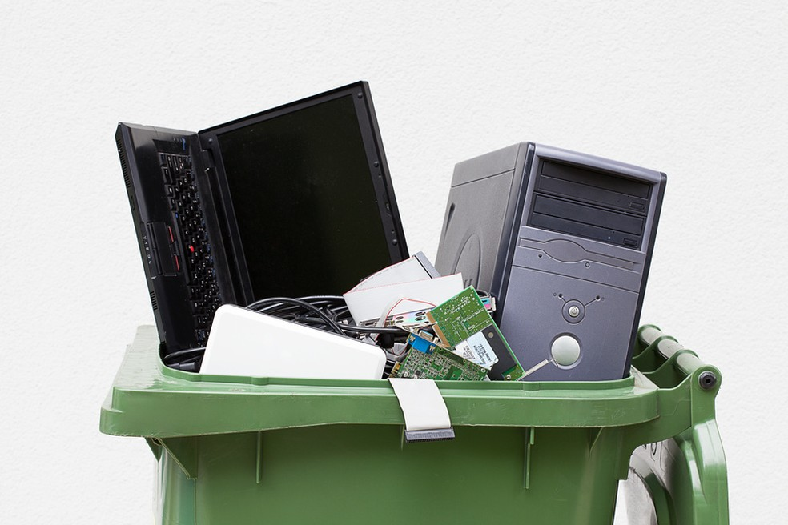
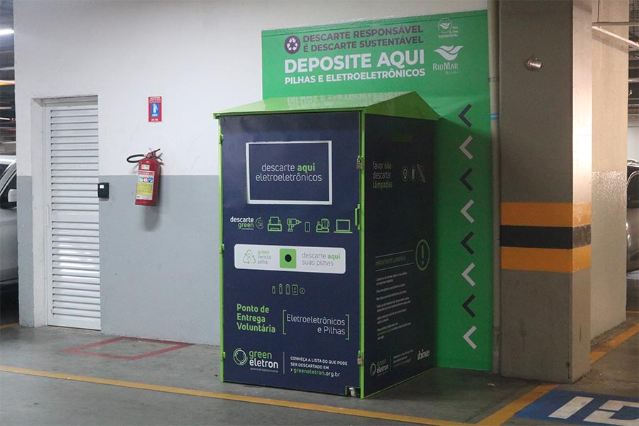

Como Descartar o Lixo Tecnológico

Leve seus aparelhos eletrônicos quebrados para pontos de coleta especializados. Não jogue no lixo comum!
Procure campanhas de recolhimento de lixo eletrônico que acontecem em datas específicas.


Existem pontos de coleta próximos ao colégio que recebem celulares, pilhas, e computadores antigos.